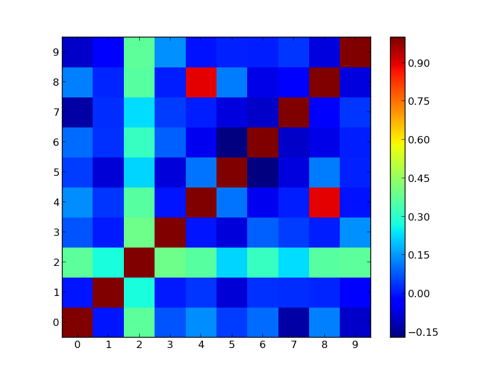

In this project, I used Microsoft SQL Server to perform data cleaning on a dataset of Nashville housing sales.
I demonstrated how to change the date format, populate missing values, and remove duplicates using various SQL commands and functions.
I also explained the logic and purpose of each step in the script.
I used SQL to explore the COVID-19 dataset from Our World in Data, which contains daily statistics on cases, deaths, vaccinations, and other indicators for countries and regions around the world .
I performed various queries to answer questions such as: Which countries have the highest and lowest vaccination rates? How does the stringency index affect the number of new cases and deaths?
What are the trends and patterns of different variables over time and across regions.
In this project, I created a dashboard that shows the employee attrition rate for a fictional company.
I used Tableau to visualize the data and explore how attrition varies by age, education majors, and gender.
The dashboard can help HR managers and
leaders to understand the diversity and inclusion of their workforce,
and take actions to reduce attrition and improve employee satisfaction.

In this project, I used Python to create a neural network using Tensor flow and Keras to predict customer churn in the telecom industry.
This project is beneficial to the Telecom companies as it predicts which customers are likely to churn allowing them to take proactive measures to retain those customers.
By identifying those at risk of leaving, companies can take steps to address their concerns and improve their experience,
which can lead to increased customer loyalty and revenue.

This Project is about checking and visualizing correlation between variables in Python.